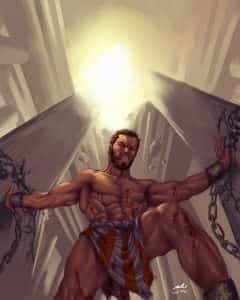

Even people who’ve never cracked open a Bible have heard of Samson—the Hebrew judge who performed superheroic deeds of strength in his short life during ancient times. Whether you were introduced to him via Hollywood or Sunday School, chances are you’re not aware of the relevant lessons we can learn from his example. His life story, when the details aren’t glossed over as usual, demonstrates the folly of many blue pill pitfalls warned about in the manosphere.
Like all the “heroes” documented in the Book of Judges, Samson was ordained by God to lead and deliver his people (the nation of Israel in general, and the tribe of Dan in particular) after the Israelites fell into the idolatry practiced by their enemies. Samson is one of the rare failures (like King Saul) who didn’t himself chase after pagan gods, but his particular weakness had consequences just as tragic. It is a weakness shared by too many men alive today.
Samson’s father, Manoah, might have had some idolatry issues, seeing as how he intended to sacrifice a burnt offering to a messenger delivering the message that Manoah’s barren wife would bear a son. before realizing that it was the Angel of the Lord delivering the message. If Manoah was, indeed, spiritually wishy-washy, that may have played a part in how Samson was raised.
Our first clue as to parental failures comes in Judges 14:2 when Samson orders his parents to secure a wife for him. Arranged marriages were commonplace back then, but a child dictating to his parents was not. In fact, under their law, a child who disrespected his parents could be put to death.
There is more than one inferrence we can make from this passage:
- Samson was most likely a spoiled brat. Many parents are too liberal in child-rearing when the child is exceptionally gifted—as was Samson.
- At the same time, Samson evidently had rejected what teaching his parents had passed down to him, since he demanded a woman from their pagan enemies for his wife.
His supplicating parents let him have his way, against their better judgment. And before the marriage was even consummated, it became clear that the woman Samson chose for a wife was more loyal to her countrymen than to her husband.
Her crocodile tears-on-demand coerced weak beta chump Samson to divulge the secret of his famous riddle to her. She wasted no time passing the answer on to the Phillistines, resulting in her husband losing a costly bet. After collecting what was needed to pay up, Samson proved what a hapless tool he already was by wanting to go through with the marriage to the backstabbing woman anyway. But alas, he had been cucked by his would-be father-in-law, who married her off to another man.
Samson had dodged a bullet by having what was sure to be a disastrous marriage preempted, but his thirsty beta-cuck pathos was just getting started.
His exploits against the Philistines were impressive. One episode you might not know about is when the Philistines tried to trap him by locking the gates when he visited a prostitute in their town. He tore the gates right out of the city wall to escape. But as clever and powerful as he was in striking against his enemies, that’s how idiotic and weak he was when dealing with the fairer sex.
In time, Samson found “the one” (or so he thought) to put on his pedestal, and went full retard. To describe him as “pussywhupped” by Delilah might be more literally accurate than we would guess before studying the text.
Sex was a deadly weapon in this vamp’s skillful hands. The Philistines contracted her for a promised fortune if she could discover the “secret of his strength,” and she knew what buttons to push. She nagged and coaxed and shit-tested as only a woman knows how do for him to reveal his secret.
At first he was at least savvy enough to give her bogus information. She used it anyway to trap or immobilize him, but completely failed to contain him. Delilah proved that she was attempting to betray him, over and over again, yet he kept going back for more!
One can’t help wondering if this infamous couple were playing bondage games. Maybe female domination was a big turn-on for Samson, but when he learned his life was truly in danger, survival instincts took over and he quit playing along. We know he wasn’t normally a stupid man thanks to other details in the story, but some men can be rendered worse than stupid when under the hold of a fetish. In fact, many of us in our blue pill days likely were rendered stupid by at least one female even without some sort of kinky obsession at work.
Delilah changed weapons, from sex to her emotions, and turned on the waterworks. Samson confessed his weakness. Once his Nazerite covenant was flagrantly violated, Samson’s god (the only one who had proven a trustworthy friend in his life despite Samson’s less-than-impeccable track record) abandoned him. He tried to escape Delilah’s bondage trap when the Philistines rushed in, but only had the strength of a normal man. They imprisoned him and gouged out his eyes.

Samson’s God came through for him one more time by answering his prayer and allowing him to die while exacting revenge, but aside from some amazing feats of strength, Samson’s life is a case study in wasted potential, squandered opportunity, piss-poor frame control, and the utter foolishness of letting your little head do the thinking for you.
Read Next: Samson’s Tale Cautions Against Dark Triad Women